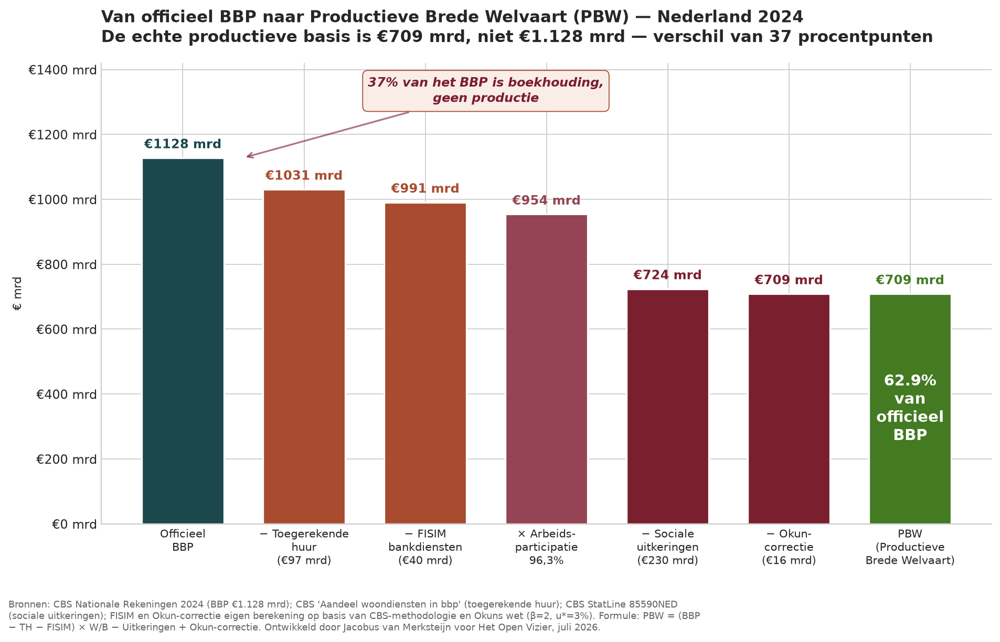
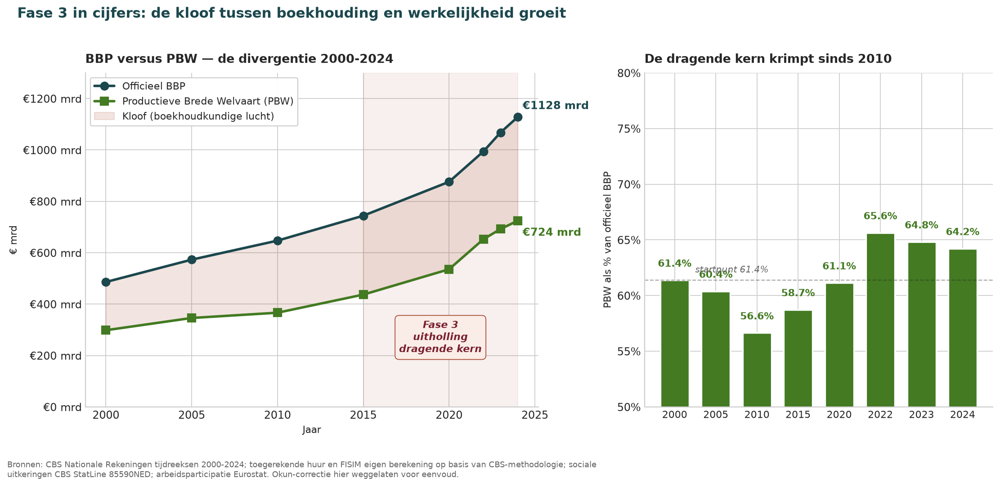
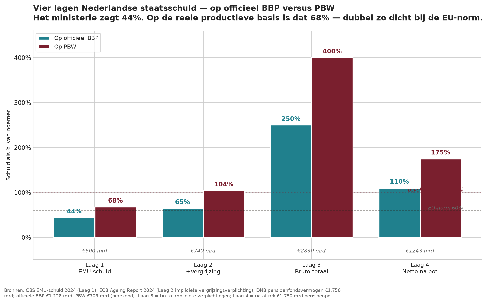
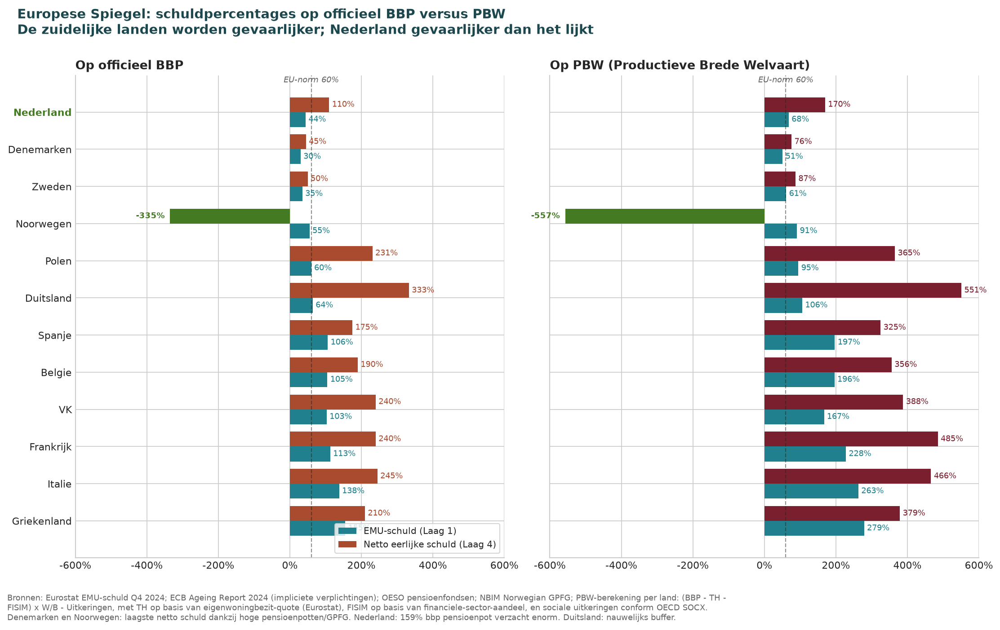
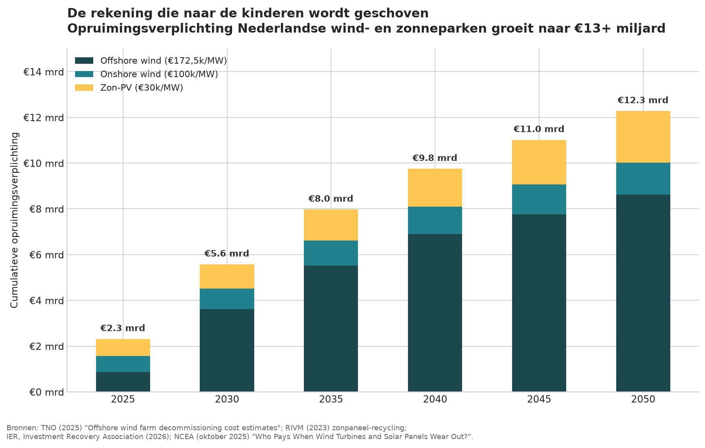
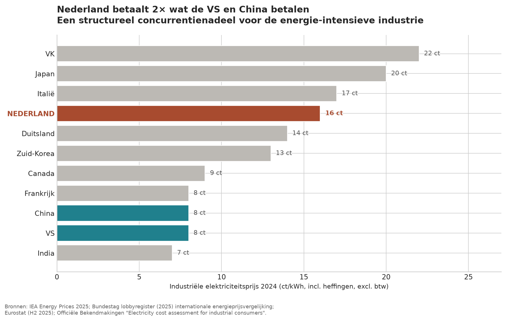
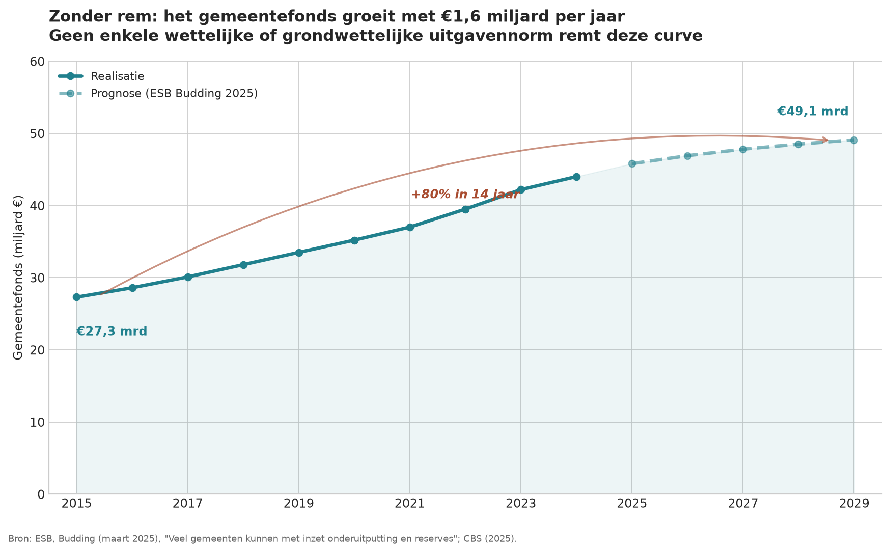
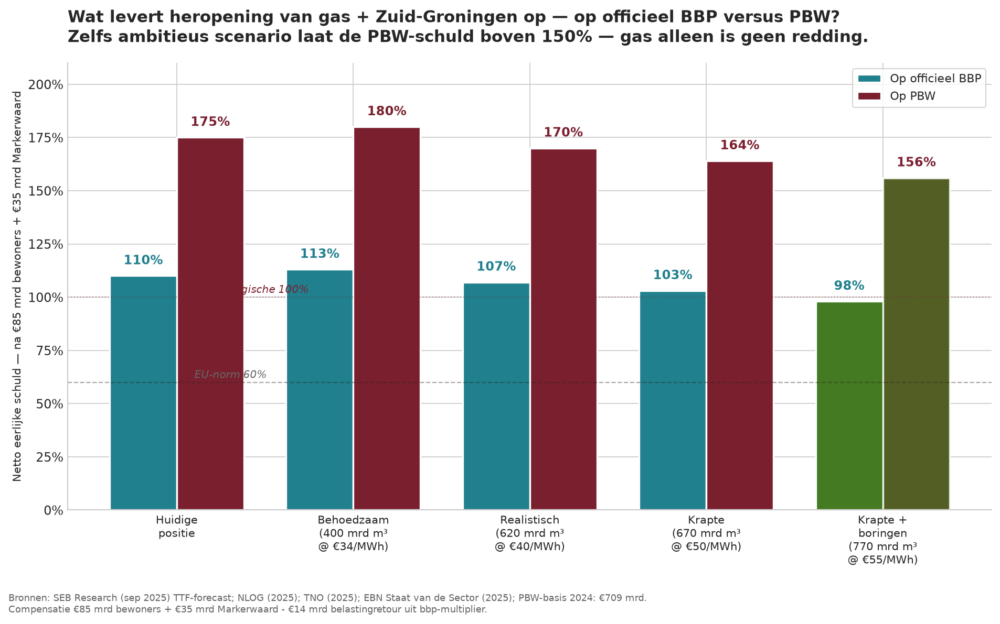
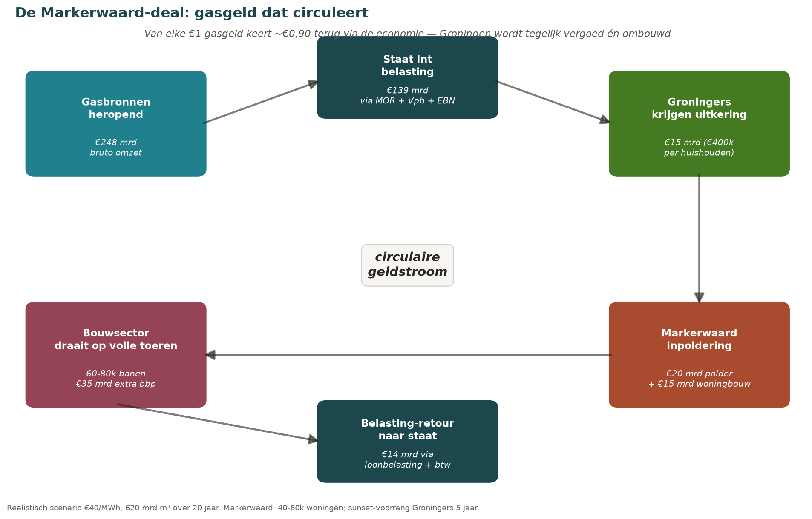
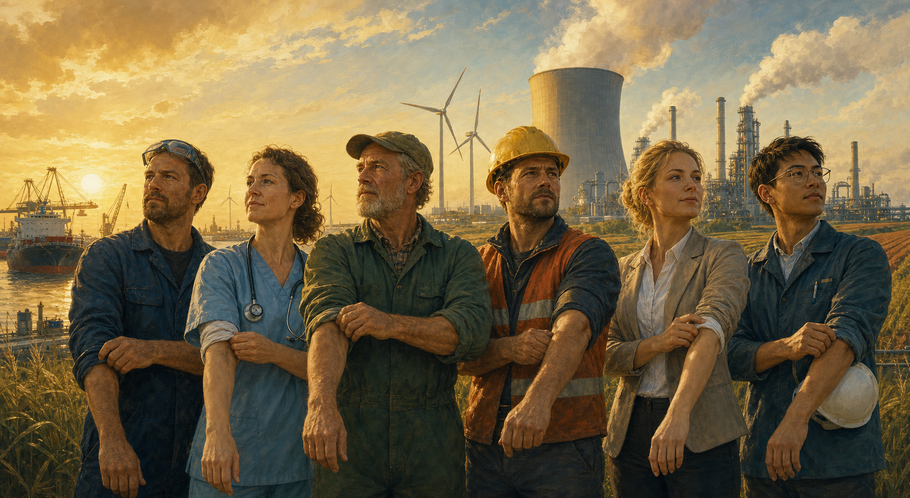

La honestidad hace posible gobernar
Que el gobierno sea honesto y ponga la realidad sobre la mesa — un tríptico
Jacobus van Merksteijn
- Autor — Jacobus van Merksteijn
- Fecha — 20 de julio de 2026, Palma de Mallorca
- Sección — Tríptico político-económico · Edición 2 · Edición Nova Democratia
- Base — Cuatro capas de deuda pública · Fórmula PBW · Espejo europeo · Cuenta de los hijos · Sin freno · Pregunta prohibida (gas)
- Fuentes — CBS, CPB, Eurostat, Bruegel, WRR, TNO, Netspar
Desde Balkenende, ningún primer ministro neerlandés ha querido decir en voz alta lo que cada economista en La Haya sabe en privado: el 44% de deuda pública del que nos enorgullecemos no es mentira, pero es la mitad de la historia. La carga real que transmitimos a nuestros hijos se dirige hacia el 250% del PIB en obligaciones brutas. Y esa es solo la capa contable. Debajo hay un error aún mayor: al mismo tiempo hemos desmantelado sistemáticamente la base productiva de nuestro país. Cerramos la energía nuclear, disparamos los costes energéticos, expulsamos a la industria, trasladamos al futuro los costes de desmantelamiento de la eólica y la solar, y en los tres niveles de gobierno soltamos todo freno al gasto.
Por qué este tríptico
Este tríptico reúne esas confesiones de deuda. No como ataque partidista — cada coalición desde 2002 ha contribuido a ello, incluidos los partidos por los que la mayoría de nosotros votó alguna vez. Ni como declaración de guerra a sindicatos o empresarios — todos estuvimos sentados en la misma mesa incompleta. Sí como fundamento fáctico para la conversación que debemos tener en la mesa de negociación colectiva, en el ayuntamiento, en Bruselas y en la mesa familiar. Sin cifras honestas no hay negociación honesta. Sin reconocimiento no hay mandato para el cambio necesario. Y sin ese cambio, dejamos a nuestros hijos un país que nosotros mismos ya no querríamos heredar.
"La honestidad hace posible gobernar. Mientras ocultemos la realidad, cada negociación es un juego de sombras — y todos perdemos, incluso quienes creen ganar a corto plazo."
El tríptico se construye alrededor de un hilo conductor: trasladar la carga. Pero antes de poder discutir esa deuda con honestidad, debemos reparar el denominador con el que se expresa esa deuda: el PIB mismo. Eso es la Parte 0. La Parte I trata del maquillaje estadístico con el que escondemos la deuda pública — y del fondo de pensiones de 1.750.000 millones de euros que suaviza la imagen sin eliminarla. Un capítulo intermedio muestra cómo se sitúa Holanda frente a Francia, Bélgica, Italia, España, el Reino Unido y Grecia; ese panorama europeo es la clave de por qué es precisamente Holanda quien debe abrir la conversación. La Parte II muestra cómo destruimos la base industrial y energética y trasladamos los costes de desmantelamiento hacia 2050. La Parte III muestra que nosotros —a diferencia de Alemania— no tenemos en ningún nivel de gobierno un freno constitucional al gasto. Al final: una invitación a colaborar, incluso con quienes hoy vemos como adversarios.
Parte 0 — El denominador disimulado
Por qué cada porcentaje de deuda empieza con el divisor equivocado
Cada vez que decimos "44% de deuda pública" o "110% de deuda neta honesta", usamos el mismo divisor: el producto interior bruto. Asumimos que ese divisor mide el tamaño de la economía neerlandesa — la fuerza productiva con la que podemos soportar nuestras deudas. Pero esa suposición es el primer error. El PIB tal como lo reporta el CBS no es una medición de producción. Es una suma en la que se mezclan tres tipos de partidas:
- Producción real. Fábricas que fabrican bienes, transportistas que trasladan mercancías, enfermeras que cuidan, agricultores que cultivan. Esto es lo que una economía realmente produce.
- Imputaciones contables. Alquiler imputado (97.000 millones de euros en 2024): el CBS actúa como si los propietarios de vivienda se pagaran alquiler a sí mismos — pura estadística, ningún euro cambia de manos. FISIM (40.000 millones): un "precio" construido para servicios bancarios a partir del margen entre tipos de interés activos y pasivos. Capitalización de I+D desde el SNA 2010: gastos en investigación que antes eran consumo, ahora cuentan como inversión. Extracción de recursos minerales sin depreciación del capital natural.
- Artefactos de redistribución. Las prestaciones sociales (230.000 millones) no se contabilizan directamente en el PIB, pero el consumo que generan sí — con el resultado de que el desempleo se vuelve estadísticamente invisible y el PIB camufla la pérdida de producción.
La fórmula PBW — lo que queda tras la corrección
Por eso he desarrollado una medida alternativa: el Bienestar Productivo Amplio (PBW). No es una alternativa de torre de marfil; combina conocimientos económicos existentes — la advertencia de Kuznets (1962) de que el PIB nunca fue pensado como medida de bienestar, la Ley de Okun (1962) sobre los costes del desempleo, y la distinción de Mazzucato entre creación y extracción de valor — en un indicador verificable. La fórmula:
PBW = (PIB − Alquiler imputado − FISIM) × (Ocupados / Población activa) − Prestaciones + Corrección de Okun

Y esto no es una foto puntual. Si se calcula el PBW retroactivamente hasta el año 2000 con series históricas del CBS, se observa un patrón estructural: el núcleo sostenible oscila entre el 56% y el 66% del PIB, con una caída en 2010 (crisis financiera) y recuperación hacia el 64% en 2024. No es un vaciamiento lineal, sino un indicador que se mueve junto con la salud de la economía real — y que se sitúa estructuralmente entre 35 y 44 puntos porcentuales por debajo de lo que sugiere el crecimiento del PIB reportado.

Para 2024, el PBW se sitúa en 709.000 millones de euros — 62,9% del PIB oficialmente reportado. Más de un tercio de lo que llamamos "la economía neerlandesa" consiste, por tanto, en construcciones contables, consumo de redistribución y una gestión incorrecta del capital humano. No es un fraude del CBS — siguen fielmente el Sistema de Cuentas Nacionales acordado internacionalmente. Es una decisión política presentar ese sistema como la verdad.
Lo que el PBW hace con las cifras de deuda
En cuanto se usa el PBW en lugar del PIB oficial como denominador, todas las cifras de deuda cambian drásticamente:
| Indicador de deuda | Volumen (mil M€) | Sobre PIB oficial | Sobre PBW |
|---|---|---|---|
| Deuda EMU (Capa 1) | 500 mil M€ | 44% | 68% |
| Incl. compromiso de envejecimiento (Capa 2) | 740 mil M€ | 65% | 104% |
| Total implícito bruto (Capa 3) | 2.830 mil M€ | 250% | 400% |
| Deuda neta honesta (Capa 4) | 1.243 mil M€ | 110% | 170% |
PBW 2024: 709 mil M€. Calculado como (PIB − alquiler imputado − FISIM) × Ocupados/Población activa − Prestaciones + Corrección de Okun.
El mensaje de esta parte no es: descartar el PIB. El mensaje es: mirar ambos. Cuando un ministro dice "nuestra deuda es 44% del PIB, muy por debajo de la norma UE del 60%", eso es estadísticamente correcto. Pero sobre la base productiva real, esa misma deuda es el 68% del PBW — por encima del límite que nosotros mismos manejamos. El compromiso de envejecimiento (Capa 2) es sobre el PBW un 104% — uno a uno con la base productiva. Y la deuda neta honesta es 170% del PBW: más de un año y medio de producción de lo que realmente generamos.
En el resto de este artículo sigo usando, por legibilidad, los porcentajes oficiales del PIB, porque son las cifras que manejan políticos y periodistas. Pero en las tablas comparativas mostraré sistemáticamente las alternativas del PBW, para que el lector vea ambos paneles. La factura es mayor de lo que sugiere la jerga política — y comienza en el divisor.
"Distinctions must be kept in mind between quantity and quality of growth, between costs and returns, and between the short and long run. Goals for more growth should specify more growth of what and for what." — Simon Kuznets, 1962
Parte I — La Cuenta Oculta
Sobre las cuatro capas de la deuda pública neerlandesa y por qué el 44% es media verdad
Las cifras que se comunican oficialmente
A finales de 2025, la deuda pública neerlandesa se situaba en 524.000 millones de euros — exactamente 44,4% del PIB. El gobierno prevé para 2026 una deuda del 46,6%, que sube hasta más del 50% en 2031. En toda la comunicación hacia sindicatos, empresarios y ciudadanos, esta cifra se usa como prueba de que "Holanda lo ha hecho bien" — muy por debajo de la norma UE del 60%, muy por debajo de la media UE del 81,7%.
Esta cifra no es mentira. Se calcula según la definición europea EMU y es exacta hasta el último euro. Pero es una fotografía de bonos emitidos — no de obligaciones. Y ahí empieza la historia.
Cuatro capas: del 44% al 110% de deuda honesta

Capa 2 — Ya comprometido, aún no contabilizado como deuda EMU
En cuanto se consolida lo que el gobierno ya ha prometido pero aún no contabiliza como deuda EMU — compromisos plurianuales de Defensa, el Fondo Climático, la resolución de daños de Groningen, los planes de recompra de nitrógeno, el déficit de la AOW que se cubre estructuralmente con fondos generales, más las garantías estatales y participaciones — se llega a una cifra considerablemente mayor. No en vano el Grupo de Estudio del Espacio Presupuestario recomendó un ajuste estructural de 7.000 millones de euros solo para estabilizar la deuda. Estimación realista para esta capa: alrededor del 65% del PIB.
Capa 3 — Obligaciones implícitas brutas
Esta es la capa que se disimula sistemáticamente por motivos políticos. La AOW y los cuidados de larga duración se pagan en gran parte con fondos generales sin cobertura correspondiente. El propio CPB calcula que, sin cambios de política, la deuda sobre base EMU pura sube hasta el 126% del PIB en 2060. Si se incluyen los compromisos implícitos de pensiones — la clásica implicit pension debt — se llega en bruto a un rango de 200 a 250% del PIB. El déficit de sostenibilidad es, según el Senado, del 1,6% del PIB anual, es decir, unos 16.000 millones estructuralmente insuficientes. El WRR advierte explícitamente: financiar pensiones mediante deuda pública creciente traslada la factura a las siguientes generaciones.
Capa 4 — Deuda neta honesta: 110% del PIB
Y entonces llega la corrección que suaviza la imagen sin eliminarla. Holanda tiene, gracias a su segundo pilar de capitalización, con diferencia el mayor patrimonio de pensiones de Europa: alrededor de 1.750.000 millones de euros, o el 159% del PIB. Con un tipo impositivo medio del 35% sobre las pensiones, el Estado reclama sobre ello una obligación fiscal latente de alrededor del 55% del PIB — la regla de inversión dice: cotizaciones exentas, prestaciones gravadas. Además, Holanda posee participaciones estatales (Schiphol, Gasunie, TenneT), infraestructura y activos públicos valiosos; históricamente, además, se recaudaron 417.000 millones de euros en ingresos de gas natural entre 1969 y 2021, de los cuales parte está implícita en servicios públicos.
Neto — es decir, tras restar estas contrapartidas — la deuda honesta neerlandesa se sitúa en torno al 100-120% del PIB. Sigue siendo casi el doble de la norma UE del 60%, y más del doble de la cifra oficial del 44%. Pero es fundamentalmente distinto del 250% desnudo sin corrección. Y es precisamente esta combinación —alta carga implícita con una contrapartida sustancial— la que da a Holanda una posición única en Europa.
El maquillaje estadístico: el alquiler imputado
Además de ocultar obligaciones, también se infla sistemáticamente el denominador — el PIB sobre el que se calcula el ratio de deuda. El CBS contabiliza el llamado "alquiler imputado" de viviendas en propiedad por 54.000 millones de euros anuales como producción de los hogares, como si los propietarios se alquilaran su vivienda a sí mismos a precio de mercado. Con un PIB de unos 1.100.000 millones, eso es 5% del PIB que existe puramente en la contabilidad: ningún euro comerciado, ningún impuesto cobrado, ningún servicio prestado a un tercero.
No es un truco típicamente neerlandés — EE. UU. (6,2%), el Reino Unido (10%), Japón (10%) e Irlanda hacen lo mismo bajo el estándar SEC-2010. Lo que sí distingue a Holanda: Eurostat encontró que el alquiler imputado reduce la desigualdad de ingresos en casi todos los países de la UE — excepto en Holanda y Noruega, donde en realidad la aumenta. Ni siquiera la justificación social se sostiene aquí.
Capítulo intermedio — El Espejo Europeo
Por qué es precisamente Holanda quien debe abrir la conversación europea — las cuatro capas para doce países
Antes de pensar que lo hacemos mal: déjenme mostrar un espejo. Cuando se aplican las mismas cuatro capas a once países europeos comparables, se llega a una imagen que la política neerlandesa evita a toda costa comunicar — pero que de hecho faculta precisamente a Holanda para ser la primera en decir la verdad.

| País | Deuda EMU | Fondo de pensiones (2º pilar) | Neto honesto sobre PIB | Neto honesto sobre PBW |
|---|---|---|---|---|
| Holanda | 44% | 159% PIB | ~110% | ~170% |
| Dinamarca | 30% | 206% PIB | ~45% | ~76% |
| Suecia | 35% | ~90% PIB | ~50% | ~87% |
| Noruega (GPFG) | 55% | 490% PIB | −335% | −557% |
| Polonia | 60% | ~9% PIB | ~231% | ~365% |
| Alemania | 64% | ~7% PIB | ~333% | ~551% |
| Reino Unido | 103% | 100% PIB | ~240% | ~388% |
| Bélgica | 105% | 8% PIB | ~190% | ~356% |
| España | 106% | 11% PIB | ~175% | ~325% |
| Francia | 113% | 9% PIB | ~240% | ~485% |
| Italia | 138% | 11% PIB | ~245% | ~466% |
| Grecia | 155% | 1% PIB | ~210% | ~379% |
Fuentes: Eurostat T4 2025; OECD Pension Markets in Focus 2025; Netspar/PSE/Cato Institute; Eurostat Pensions in national accounts 2024.
Lo que destaca — cinco observaciones
La posición neerlandesa es fundamentalmente distinta de la de economías europeas comparables. Cinco cosas destacan y deberían cambiar el debate en Holanda:
- Holanda tiene, con diferencia, el colchón más fuerte. Con 159% del PIB en patrimonio de pensiones, puntuamos el doble que Suiza y Canadá, y de quince a veinte veces más que Francia (9%), Italia (11%), Bélgica (8%) o España (11%).
- Nuestra deuda neta honesta es la más baja entre los países europeos no escandinavos. Sobre PIB oficial: 110% (NL) frente a 190% (Bélgica), 240% (Francia/RU), 245% (Italia), 175% (España), 210% (Grecia), 333% (Alemania). Sobre PBW: 170% (NL) frente a 356-551% para esos otros países. Solo Dinamarca (76%), Suecia (87%) y Noruega (−557%) lo hacen significativamente mejor gracias a sus fondos soberanos. Alemania es un caso aleccionador: el 64% de deuda EMU suena moderado, pero con su débil fondo de pensiones y fuerte envejecimiento, la deuda neta honesta supera el 550% del PBW.
- Para Francia, Bélgica, Italia, España y Grecia, la confesión se ha vuelto políticamente imposible. Bruegel calcula que Francia debe mejorar su saldo primario entre un 4-5% del PIB solo para hacer frente al envejecimiento. Para Italia ocurre lo mismo. La deuda implícita de pensiones francesa se sitúa, según la Paris School of Economics, entre el 210 y el 470% del PIB. Un presidente francés que admitiera esto perdería su gobierno en semanas.
- Nosotros podemos soportar la carga — ellos no. Eso convierte nuestro patrimonio de pensiones no en una excusa para callar, sino en un mandato para hablar. Somos los únicos que pueden sostener la verdad sin que el sistema implosione de inmediato.
- La deuda implícita europea es un riesgo sistémico. La Comisión Europea clasifica a once estados miembros como de "alto riesgo de sostenibilidad fiscal", incluidos Bélgica, Francia, Italia, España y Grecia. Si uno de ellos colapsa, arrastra a la eurozona y por tanto a Holanda. Nuestro fondo de pensiones de 1.750.000 millones está en parte invertido precisamente en esos bonos europeos. Nuestra seguridad depende de sus reformas.
"Nuestro fondo de pensiones no nos hace inmunes. Nos hace precisamente competentes para decir la verdad — porque somos los únicos que pueden sostenerla sin que el sistema implosione."
Por qué este es el papel de Holanda
Tradicionalmente, Holanda es en Europa el país del tesorero — el contable pequeñoburgués del "mantenga su casa en orden". No es un papel fuerte en negociaciones políticas; franceses e italianos se irritan con ello, y con razón. Pero al aplicar el análisis de cuatro capas, queda claro que Holanda puede desempeñar otro papel: el de corredor honesto. No somos el contable ahorrador que da lecciones a los demás. Somos la parte que se atreve, como única, a presentar la suma honesta porque, como única, hemos acumulado la contrapartida para encontrar juntos el camino de vuelta.
Eso cambia por completo el marco en Bruselas. En lugar de "La Haya vuelve a quejarse de disciplina presupuestaria", se convierte en: "Holanda pone la deuda europea honestamente sobre la mesa —incluido su propio 110%— e invita a un camino conjunto de reformas". Es una posición fundamentalmente distinta, y está políticamente disponible por primera vez desde Kok.
Por qué esto envenena las negociaciones salariales
Volvamos a la mesa nacional neerlandesa. El marco "hemos sido austeros, hay margen para +X%" solo es correcto si se mira exclusivamente la Capa 1. En cuanto las Capas 2, 3 e incluso la 4 están sobre la mesa —110% del PIB neto— no hay estructuralmente ningún margen para el esquema habitual de convenios colectivos. Los sindicatos lo perciben, sin conocer las cifras exactas. Los empresarios también lo perciben. El resultado: todos en la mesa defienden su propia posición con cifras que todos saben incompletas. Eso ya no es negociación, es un juego de sombras.
44% visible, 65% comprometido, 250% bruto obligado, 110% neto tras contrapartidas — el doble de la norma UE, y un déficit de sostenibilidad del 1,6% del PIB al año.
Entonces la conversación ya no es "repartir el beneficio", sino "repartir la carga del ajuste". Una negociación fundamentalmente distinta. Y —crucial— una negociación en la que sindicatos y empresarios pueden elegir el mismo bando: contra trasladar la carga a los hijos. Es una coalición que hoy no existe, pero que mañana puede ser posible en cuanto las cifras estén honestamente sobre la mesa.
Parte II — La Cuenta de los Hijos
Sobre energía nuclear, alternativas caras, costes de desmantelamiento y la lenta destrucción de la industria neerlandesa
El error nuclear — Alemania y Holanda
En abril de 2023, Alemania cerró sus últimos tres reactores nucleares — Isar 2, Emsland y Neckarwestheim 2. La narrativa oficial dice: sin shocks de precios, sin problemas de suministro, más renovables, menos carbón. A corto plazo, técnicamente cierto, porque la industria estaba entonces en recesión y la demanda había caído. En cuanto Alemania salga de la recesión, incluso la DIHK (Cámara de Comercio alemana) advierte que el efecto en precios se hará visible.
La realidad industrial es ya despiadada: BASF traslada el 10% de su producción de Ludwigshafen a China y EE. UU. ThyssenKrupp reduce la producción de acero. Volkswagen cierra fábricas en su propio país por primera vez en 87 años. Holanda formalmente no lo ha hecho tan dramático —Borssele sigue en marcha hasta 2033— pero desperdiciamos entre 1997 y 2020 veintitrés años sin realizar ninguna construcción nueva. Francia exporta actualmente entre 50 y 90 TWh anuales a sus vecinos a precios récord; en gran parte a Alemania e indirectamente a nosotros. Así que pagamos por la energía nuclear francesa, solo que no tenemos el beneficio.
La factura de desmantelamiento hacia 2050

TNO calcula 172.500 euros por MW para la retirada completa de un parque eólico marino. Holanda tiene ahora unos 5 GW de eólica marina, creciendo hacia 21 GW en 2030 y 50 GW en 2050. Eso significa, solo para el desmantelamiento marino, una obligación futura de 8 a 9 mil millones de euros — además de la eólica y solar terrestre. Para turbinas terrestres, el Instituto estadounidense para la Investigación Energética estima entre 100.000 y 410.000 dólares por turbina. Para paneles solares, el RIVM muestra que la práctica habitual es el downcycling: solo se reutilizan el marco de aluminio y los cables.
¿Y quién paga esa factura? Precisamente el eje de este tríptico: los hijos. El National Center for Energy Analytics estadounidense lo dice literalmente: "consumers or taxpayers—not the owners—will likely be left to pay a significant portion of the $50 billion or more in future decommissioning costs". Los bonos de desmantelamiento son sistemáticamente condonados por los reguladores porque, de otro modo, los proyectos no serían rentables — un truco contable estructural, análogo precisamente a la deuda pública implícita de la Parte I.
La lenta destrucción de la industria

El precio industrial de la electricidad en Holanda en 2024 rondaba los 16 ct/kWh — el doble que en EE. UU. y China (8 ct), el doble que Francia (8 ct), y en el mismo orden que el Reino Unido (22 ct) y Japón (20 ct). Un estudio neerlandés para la Cámara de Representantes muestra que los clientes industriales de carga base neerlandeses pagarán en 2030 64 EUR/MWh más que sus competidores alemanes y franceses, simplemente por la falta de exenciones en costes de red y gravámenes.
Sobre eso se acumula la presión colectiva de cargas. La presión fiscal colectiva subió del 36,5% (2015) al 39,5% (2021), bajó ligeramente al 38,9% (2022), y desde entonces vuelve a subir hacia el 40%. El aumento extraordinario del salario mínimo en enero de 2024 (+10,15%) elevó de golpe los costes laborales en industria, sanidad y agricultura. Holanda tiene ahora uno de los salarios mínimos más altos en paridad de poder adquisitivo de Europa, mientras la industria intensiva en energía está a punto de marcharse.
Lo que llamamos asesinato de la industria tiene en la jerga económica un nombre: structural energy cost disadvantage. El FMI y la OCDE señalan esto explícitamente a Holanda y Alemania desde 2023. Hemos cerrado simultáneamente la fuente de electricidad fiable más barata (nuclear), acumulado las fuentes variables más caras (eólica y solar), acumulado los costes de red y gravámenes, y disparado los costes laborales vía salario mínimo y cargas colectivas. Cada pilar por separado es defendible. Juntos son suicidio industrial. Y —este es el puente hacia la Parte III— no hay ninguna ley que lo detenga.
Parte III — Sin Freno
Sobre el desenfreno del gasto en todos los niveles de gobierno y la ausencia de un freno de deuda neerlandés
El freno alemán — por qué no existe en Holanda
Desde 2016, el gobierno federal alemán no puede endeudarse en términos netos más del 0,35% del PIB. Esto está anclado constitucionalmente en el artículo 115.2 de la Grundgesetz — el llamado Schuldenbremse. En noviembre de 2023, el Tribunal Constitucional Federal declaró inconstitucional un traslado de 60.000 millones de euros entre fondos. Así que ni siquiera el gobierno alemán puede moverse libremente.
Holanda nunca introdujo este tipo de freno constitucional. La Norma Zalm —un acuerdo informal, no una ley— se ha ido abandonando sistemáticamente e incluso el NRC la da abiertamente por muerta. Existen construcciones tipo Sondervermögen (Fondo Climático, Fondo Nacional de Crecimiento, Fondo de Defensa), pero escapan a una supervisión constitucional equivalente. Y los ingresos históricos del gas natural —417.000 millones de euros entre 1969 y 2021— se han diluido en gran parte en los fondos generales sin un fondo soberano al estilo noruego.
Municipios: gasto duplicado en quince años

El Fondo Municipal creció de 27.300 millones de euros en 2015 a 42.200 millones en 2023 y sigue creciendo hasta 49.100 millones en 2029 — un aumento medio de 1.600 millones al año, estructural. El gasto municipal por habitante subió de 3.822 euros en 2023 a 4.650 euros en 2025 — un aumento del 22% en dos años. Presupuesto municipal total en 2025: 80.000 millones, una duplicación desde aproximadamente 2010. Añádanse provincias y Estado central y no hay ninguna ley que diga: esta es la norma por habitante, aquí se detiene.
Los tres niveles sin freno
| Nivel de gobierno | ¿Freno? | Efecto |
|---|---|---|
| Gobierno central | Ninguno | Norma Zalm abandonada, sin límite constitucional, norma UE del 60% no vinculante. |
| Provincias | Ninguno | El fondo provincial crece sin obstáculos, sin norma de gasto por habitante. |
| Municipios | Ninguno | 3.822 € → 4.650 € por habitante en dos años (+22%). Presupuesto duplicado desde 2010. |
| Alemania (federal) | Sí: 0,35% del PIB | Anclado constitucionalmente desde 2016. Exigible ante el Tribunal Constitucional Federal. |
No es que hayamos cometido errores. Hemos elegido sistemáticamente no tomar decisiones. Esa es la diferencia más fundamental con Alemania — y ahí está nuestra verdadera deuda. Pero lo que hemos descuidado, podemos repararlo hoy.
Parte III bis — La pregunta prohibida
¿Y si volvemos a abrir el gas y construimos el Sur de Groningen?
Si nos mantenemos en una confesión honesta, también debemos atrevernos a plantear la pregunta más controvertida: ¿qué pasa si Holanda reabre sus fuentes de gas y compensa por fin generosamente a los habitantes de Groningen? Esto se ha convertido en tabú político — y precisamente por eso hay que denunciarlo. No por nostalgia, sino para demostrar que incluso esta solución más deseada no funciona sin las demás reformas.
¿Qué queda todavía bajo tierra?
Los hechos geológicos duros: el yacimiento de Groningen se cerró definitivamente en abril de 2024, pero contiene todavía ~470.000 millones de m³ de gas extraíble. Los campos pequeños en tierra y en el Mar del Norte suman ~71.000 millones de m³ de reservas probadas, con estimaciones del TNO que añaden 115.000 a 150.000 millones de m³ de potencial geológico adicional. El director de EBN, Van Hoogstraten, declaró en abril de 2025: "There is still at least 100 Bcm of gas under the Dutch North Sea. This natural gas can make a major contribution to our energy independence.". En conjunto: 400.000 a 770.000 millones de m³ — dependiendo de cuán agresiva sea la reapertura y exploración. Solo la reserva de Groningen vale, a un precio de gas de 37 €/MWh, unos 174.000 millones de euros brutos — casi un seis por ciento del PIB anual actual.
Y esa es la estimación cautelosa. SEB Research situó en septiembre de 2025 el promedio TTF de 2025 en 38,7 €/MWh, con una previsión de 34 €/MWh para 2026 y 30 €/MWh para 2027 en cuanto llegue la ola de GNL de EE. UU., Qatar y Canadá. Pero SEB advierte al mismo tiempo de "higher for longer" durante 2025-26: escasez invernal, almacenamiento por detrás del año anterior, suministro noruego limitado por mantenimiento, y reabastecimiento asiático que tensiona el mercado atlántico. Cada paso atrás en la importación rusa de GNL a Europa empuja el precio hacia arriba. Y cada nuevo pozo en el Mar del Norte neerlandés aumenta la reserva extraíble. La pregunta no es, por tanto, si las reservas valdrán más de lo que pensamos ahora — sino cuánto más.
Cuatro escenarios calculados

El cálculo es el siguiente. Históricamente, el Estado neerlandés recaudaba alrededor del 70% de los ingresos brutos del gas vía derechos mineros, regalías, participación de EBN e impuesto de sociedades. Con un 20% de costes de extracción y el reparto histórico, el ingreso neto para el Estado resulta ser los ingresos brutos multiplicados por 0,56. Réstense los 85.000 millones de compensación a residentes más los 35.000 millones de inversión en Markerwaard, y súmense los 14.000 millones de retorno fiscal del multiplicador del PIB, y queda esto:
| Escenario | Volumen | Ingresos brutos | Neto Estado | Deuda PIB / PBW |
|---|---|---|---|---|
| Cauteloso (400 mil M m³ @ 34 €/MWh) | 400 mil M m³ | 136 mil M€ | −30 mil M€ | 113% / 180% |
| Realista (620 mil M m³ @ 40 €/MWh) | 620 mil M m³ | 248 mil M€ | +33 mil M€ | 107% / 170% |
| Escasez (670 mil M m³ @ 50 €/MWh) | 670 mil M m³ | 335 mil M€ | +82 mil M€ | 103% / 164% |
| Escasez + nuevos pozos (770 mil M m³ @ 55 €/MWh) | 770 mil M m³ | 424 mil M€ | +131 mil M€ | 98% / 156% |
Cálculo: 10 kWh/m³ de valor calorífico; participación del Estado 70% de ingresos brutos menos 20% de costes de extracción; 85 mil M€ residentes + 35 mil M€ Markerwaard − 14 mil M€ retorno fiscal.
Sur de Groningen — el acuerdo circular
Hasta aquí solo se trataba de dinero de vuelta al tesoro. Pero el verdadero momento de ruptura está en otro lugar. En algún punto de la franja norte de la Randstad deben construirse entre 40.000 y 60.000 viviendas nuevas — una ciudad moderna descarbonizada que se llamará Sur de Groningen. Eso convierte el acuerdo del gas no en una prestación a distancia, sino en un traslado concreto a una nueva vivienda en una nueva región, financiado desde el mismo subsuelo.
Tres ubicaciones posibles
Hay tres opciones serias, cada una con sus ventajas e inconvenientes. La elección es una decisión política que debe tomarse en base a la evaluación de impacto ambiental, la hidrología del IJsselmeer y la integración con Natura 2000. Pero las opciones existen:
- Opción A — Markerwaard (60.000 ha). El cuarto pólder del IJsselmeer que se abandonó en 1986. Mayor capacidad (hasta 60.000 viviendas más agricultura e industria), pero la intervención más drástica en el sistema del IJsselmeer y los costes de empoldering más altos (~15-20 mil M€). Realización completa: 15-20 años.
- Opción B — Ampliación de Almere Pampus y el pólder de IJmeer. Almere ya tiene planes concretos para 7.500 viviendas en Pampus con una conexión IJmeer a Ámsterdam. Ampliación hasta 40.000-50.000 viviendas mediante el empoldering contiguo del IJmeer sur. Inicio más rápido (planificación existente), menores costes de empoldering (~8-12 mil M€), pero menor capacidad máxima que Markerwaard.
- Opción C — Ampliación de Wieringermeer hacia el Afsluitdijk. Contigua al pólder existente de Wieringermeer en Holanda Septentrional. Espacialmente lo más lógico junto al corredor económico del norte de Holanda, y más cerca de las fuentes de gas. Escala menor (20-30.000 viviendas), pero la viabilidad política más rápida y la mejor conexión con infraestructura existente.
Mi preferencia va por una ruta combinada B+C: Almere Pampus como primer tramo (inicio 2026-2030), ampliación de Wieringermeer como segundo tramo (2028-2035). Juntos, unas 65.000 viviendas, repartidas en dos ubicaciones para no sobrecargar el mercado de vivienda ni el sector de la construcción. Markerwaard queda como opción para una eventual tercera fase después de 2040. Todos los costes de empoldering juntos: ~20.000 millones de euros — exactamente el presupuesto que figura en el escenario.

Lo que hace esto fundamentalmente distinto de una compensación clásica por daños es el multiplicador que recorre el sector de la construcción. Cuando una familia de Groningen recibe 400.000 euros y los gasta en una vivienda nueva en el Markerwaard, el dinero va a contratistas neerlandeses, trabajadores neerlandeses, proveedores neerlandeses. El impuesto sobre el salario, el IVA, el impuesto de sociedades y las cotizaciones patronales fluyen de vuelta al Estado. El CPB calcula para las inversiones en construcción un multiplicador de 1,3-1,5 y una presión fiscal del 40% — lo que significa que sobre los 35.000 millones de PIB adicional del proyecto Markerwaard, unos 14.000 millones vuelven como impuestos al tesoro.
Más importante aún: el proyecto resuelve tres crisis a la vez. Crisis de vivienda — 40 a 60.000 viviendas nuevas es ~5% del déficit nacional. Sector de la construcción — 60.000 a 80.000 empleos durante 10 a 15 años, en el sector que ahora se está vaciando por la crisis del nitrógeno y el shock de tipos de interés. Balanza comercial — 30.000 millones de m³ de gas nacional más construcción nacional sustituye estructuralmente 40.000 millones de euros de importación anual. Añádase que la industria neerlandesa —Chemelot, Róterdam, Tata— vuelve a tener gas competitivo, y el conjunto es más que la suma de las partes.
El principio de extinción diferenciada
El régimen de prioridad para los habitantes de Groningen no dura lo mismo para todos. Quien viva en la zona núcleo (Zona 1) recibe 7 años de prioridad sobre viviendas en el Sur de Groningen — porque ellos tienen el daño más grave y el reto de traslado más complejo. Quien viva en la zona periférica (Zona 2) recibe 5 años de prioridad — extinción estándar. Quien viva en la zona exterior (Zona 3) recibe 3 años de prioridad — porque allí el daño es más limitado y la presión de traslado menor. Todos reciben derecho de primera compra, descuento del 20% en el precio, y presupuesto de traslado además de la compensación individual.
Tras estos plazos la prioridad se extingue y las viviendas restantes quedan abiertas para todos los neerlandeses — con reglas de asignación normales. Ese es el principio de extinción: la reparación es temporal, la igualdad es permanente. Y la diferenciación asegura que quien más ha sufrido reciba más tiempo para trasladarse.
Este principio debería introducirse en todas partes de la política neerlandesa. Las medidas de reparación —ya se trate de Groningen, el escándalo de las prestaciones, la herencia colonial u otras injusticias históricas— siempre deberían tener una fecha final clara, diferenciada según la gravedad de la injusticia sufrida. No por avaricia, sino por respeto a la igualdad ante la ley. Un régimen de prioridad sin extinción se convierte en una nueva injusticia. Una extinción sin amplia prioridad no es una reparación real. Una extinción sin diferenciación es un hacha desafilada. Las tres deben ir juntas. Esta propuesta lo hace explícito.
Cuatro verdades honestas
- El gas no es una solución para la deuda. Incluso la reapertura completa aporta, a precio medio, solo 1 punto porcentual del PIB anual al Estado durante 15-20 años. Para entonces, la deuda implícita por envejecimiento habrá subido más de 100.000 millones de euros. El gas corre contra el envejecimiento — y pierde.
- El gas sí es una solución para Groningen. Los 85.000 millones de compensación a residentes en mi escenario están diferenciados según la intensidad del daño (véase la tabla más abajo). Eso está decentemente financiado con ingresos propios. No hace falta subir impuestos. Escala fundamentalmente distinta de la compensación fija actual.
- El gas sí es una solución para la industria y la crisis de vivienda. Esto se olvida a menudo. 30.000 millones de m³/año de producción nacional significa que la industria neerlandesa recibe gas por debajo del precio de mercado de la UE, la dependencia de importación de Rusia, Qatar y EE. UU. cae drásticamente, el clúster químico (Chemelot, Róterdam) sigue siendo viable, y la balanza comercial mejora estructuralmente en 40.000 millones al año. Y el empoldering de Markerwaard da al sector de la construcción —que ahora se vacía— una década de encargos y a Holanda 40-60.000 viviendas extra.
- El gas es el puente, no el destino. Según el TNO, la producción del Mar del Norte termina en 2035 sin inversiones. Con la reapertura, eso se convierte en 2050-2055 — 25 años para construir energía nuclear (Borssele 2 y 3, SMR), montar infraestructura de hidrógeno y modernizar la industria sin traslado forzoso.
Compensación diferenciada — el daño determina la indemnización
Una indemnización plana de 400.000 euros por hogar es políticamente sencilla pero insuficiente en justicia: alguien con cimientos agrietados y un largo proceso de refuerzo merece más que alguien con solo grietas cosméticas. La investigación de la TU Delft ha cartografiado los grados de daño en la zona sísmica. Sobre esa base, el importe va por zona:
| Zona | Característica | Hogares | Indemnización por hogar | Total |
|---|---|---|---|---|
| Zona 1 — Núcleo | Viviendas gravemente dañadas y reforzadas | ~10.000 | 600.000 € | 6,0 mil M€ |
| Zona 2 — Periferia | Casos de daño múltiple | ~15.000 | 400.000 € | 6,0 mil M€ |
| Zona 3 — Exterior | Algún caso de daño o depreciación | ~10.000 | 300.000 € | 3,0 mil M€ |
| Total | ~35.000 hogares | 35.000 | media 428.500 € | 15,0 mil M€ |
Indicación de zona: basada en la clasificación de la TU Delft (2016); límites definitivos a fijar por una comisión independiente. Indemnización indexada, pagada durante 25 años.
El enfoque diferenciado: 600.000 € en la zona núcleo (10.000 hogares con viviendas gravemente dañadas o reforzadas), 400.000 € en la zona periférica (15.000 hogares con casos de daño múltiple), 300.000 € en la zona exterior (10.000 hogares con algún daño o depreciación). Total 35.000 hogares, media 428.500 € — exactamente el importe que figura en el cálculo global. Así el residente más afectado recibe más, y la zona periférica también recibe una compensación sustancial sin que el núcleo salga perjudicado. Los límites definitivos de zona los fijará una comisión independiente sobre datos de daño objetivos.
Condiciones constitucionales — cinco garantías
Los habitantes de Groningen ya no confían en el Estado — y con razón. Cada promesa de que "el beneficio es para vosotros" se escucha contra sesenta años de promesas rotas. Cuando entre 1963 y 2021 recaudamos 417.000 millones de euros en ingresos de gas natural y Groningen vio de eso menos del 1%, prometer de nuevo sin garantías firmes es políticamente imposible.
La única vía responsable es, por tanto, un anclaje constitucional de cinco principios antes de abrir un solo grifo:
- Todos los ingresos netos al Fondo de Groningen. Ningún euro a los fondos generales. Gestión según el estricto modelo noruego GPFG, con la regla vinculante de que como máximo el 3% del valor del fondo puede retirarse al año — y solo para inversiones en la región y la transición energética.
- Compensación diferenciada por hogar fijada por ley. Sin ajuste político posterior. 600.000 € (Zona 1) / 400.000 € (Zona 2) / 300.000 € (Zona 3), indexado, pagado durante 25 años. Límites de zona definitivos por comisión independiente. Comparable al Alaskan Permanent Fund Dividend — lo prometido, se paga.
- Derecho de veto para la provincia. Cada decisión de producción requiere el acuerdo de la provincia de Groningen y de los ayuntamientos de la zona sísmica. Ya no hay decisión unilateral de La Haya. Si los residentes dicen "no", el gas se queda en el subsuelo.
- Vínculo gas-vivienda anclado constitucionalmente. Ninguna producción de gas sin el inicio simultáneo de la construcción de viviendas en el Sur de Groningen (Markerwaard, Almere Pampus o Wieringermeer). Ninguna vivienda sin dinero del gas. Las dos decisiones se convierten en un único paquete — de modo que ni los ingresos del gas desaparecen en los fondos generales, ni la promesa de construcción puede desvincularse y diluirse hasta la propina.
- Principio de extinción diferenciada por ley. La prioridad no dura lo mismo para todos. Zona 1 (núcleo): 7 años de prioridad — merecen el tiempo de transición más largo, pues su daño es el mayor y su reto logístico (desmontar casa dañada, construir nueva) el más complejo. Zona 2 (periferia): 5 años de prioridad — extinción estándar. Zona 3 (exterior): 3 años de prioridad — su daño es más limitado y suelen tener menos presión de traslado. Tras estos plazos, la prioridad se extingue automáticamente y las viviendas restantes se abren a todos los neerlandeses. Comparable al Alaska Permanent Fund Dividend: lo prometido, se paga — lo no prometido, no se añade silenciosamente.
"Deberíamos haber hecho esto hace cuarenta años. Lo que Noruega sí hizo, nosotros lo descuidamos — y la factura se trasladó a Groningen. Si ahora queremos volver a extraer gas, ese error debe repararse primero constitucionalmente."
Lo que el escenario nos enseña
El escenario del gas, vinculado al empoldering del Sur de Groningen, es más que una palanca adicional — es un acuerdo circular que aborda cuatro crisis a la vez. A precio TTF realista, la deuda neta honesta baja 3 puntos porcentuales (PIB) o 5 puntos (PBW); en escasez más nuevos pozos, 12 (PIB) o 19 (PBW) puntos porcentuales. Además se añaden hasta 600.000 € por hogar de Groningen en la zona núcleo, 40 a 60.000 viviendas nuevas, 60 a 80.000 empleos en construcción, y una balanza comercial estructuralmente mejor. El efecto es demasiado grande para descartarlo sin debate de fondo — pero al mismo tiempo no es una solución milagrosa: incluso en el mejor escenario, la deuda neta honesta sobre el PBW sigue por encima del 150%. Eso hace la confesión y las reformas aún más necesarias.
Pero no es en absoluto una alternativa a una contabilidad honesta, un freno de deuda o una Comisión de la Verdad. Es un complemento. Quien diga "vuelta al gas, sin reformas" vende el mismo engaño que quien dice "sin confesión, lo hemos hecho bien". Ambos cierran los ojos ante la factura que existe. El escenario gas + Markerwaard solo funciona después de la confesión, integrado en la Comisión de la Verdad, atado por extinciones constitucionales. De otro modo, se convertirá de nuevo en lo que fue en 1963: una gran deuda que cae sobre los hombros equivocados.
Cierre — La invitación

Por qué confesar no es debilidad sino el comienzo de la colaboración con quienes hoy vemos como adversarios
La invitación en cuatro pasos
Ninguna reforma tiene apoyo mientras las cifras sean deshonestas. Sin confesión, no hay mandato para medidas dolorosas. Gerhard Schröder lo hizo en marzo de 2003 con su Agenda 2010 — le costó personalmente el poder, pero Alemania cosechó los frutos durante quince años. El equivalente neerlandés falta desde Wim Kok. Pero en 2026 tenemos algo que Schröder no tenía en 2003: 1.750.000 millones de euros en patrimonio de pensiones como prueba de que podemos soportar la carga y la deuda neta honesta más baja de los países europeos comparables. Así que no llegamos a la confesión con las manos vacías — llegamos con una invitación.
- Paso 1 — Reconocer las cuatro capas y el denominador. 44% no es mentira, pero es un cuarto de la historia. La verdadera carga neta honesta es 110% sobre el PIB oficial —y 170% sobre el PBW, la base productiva real. Ambos deben nombrarse explícitamente — no como ataque sino como realidad. Sin el PBW junto al PIB, pilotamos con un instrumento de cabina que no indica la avería del motor.
- Paso 2 — Reconocer la complicidad compartida. Los sindicatos han planteado exigencias salariales basadas en el 44%. Los empresarios han postergado inversiones porque no recibieron las cifras reales. Los municipios han construido presupuestos sobre promesas implícitas del Estado que nunca estuvieron cubiertas. Las coaliciones han trasladado la carga sistemáticamente. Todos hemos pilotado con cifras equivocadas — incluido yo mismo. Eso convierte de golpe a los "enemigos en la mesa" en compañeros de infortunio.
- Paso 3 — Publicar un informe anual nacional corregido según el estándar alemán: deuda en cuatro capas, obligaciones implícitas explícitas, construcciones tipo Sondervermögen transparentemente separadas, gasto por habitante por nivel de gobierno. Publicarlo antes del Día del Presupuesto (Prinsjesdag), independientemente del gobierno, y que sea vinculante para todas las mesas de negociación de ese año.
- Paso 4 — Introducir un freno de deuda neerlandés a nivel constitucional, más normas de gasto por habitante para el Estado, las provincias y los municipios. Vinculante. Exigible ante el Tribunal Supremo. Y —crucial— elaborado en consulta con sindicatos, asociaciones empresariales, la Asociación de Municipios, la Asociación de Provincias y la oposición. No impuesto por una coalición.
Los grandes enemigos son ahora los grandes aliados
Este es el núcleo de la invitación. Mientras las cifras sean deshonestas, cada negociación es un juego de suma cero — si gana el sindicato, pierden los empresarios y viceversa. En cuanto las cuatro capas están sobre la mesa, el juego cambia: sindicatos y empresarios tienen de repente el mismo interés — no trasladar la carga a los hijos de sus afiliados. La industria tiene de repente el mismo interés que el movimiento sindical — el fondo de pensiones de 1.750.000 millones es para ambas partes la garantía de que Holanda puede invertir sin crisis. Los municipios tienen de repente el mismo interés que el Estado — un freno de deuda los protege de descentralizaciones sin cobertura.
Incluso con los socios europeos cambia la dinámica. Si Holanda muestra honestamente su 110% y al mismo tiempo su colchón del 159%, el debate en Bruselas ya no es "La Haya nos da lecciones". Se convierte en: "Si Holanda se atreve a esto, nosotros también debemos hacerlo." Francia, Bélgica, Italia, España y Grecia no pueden dar políticamente el primer paso — sus cifras son demasiado dramáticas. Nosotros sí podemos. Eso no es debilidad de ellos — es nuestra responsabilidad como corredor honesto.
Acción institucional: una Comisión de la Verdad sobre la Contabilidad Pública
En concreto, propongo una Comisión de la Verdad neerlandesa sobre la Contabilidad Pública —según el modelo alemán/sueco— con obligación de informe anclada legalmente sobre:
- Las cuatro capas de la deuda pública (EMU, comprometido, implícito bruto, neto tras contrapartidas).
- Futuras obligaciones climáticas y de desmantelamiento — eólica marina, eólica terrestre, solar fotovoltaica, hidrógeno, almacenamiento en baterías.
- Gasto por habitante por nivel de gobierno, comparado anualmente con referencias de la OCDE.
- Posición competitiva industrial: precios energéticos, costes laborales, presión fiscal neta efectiva frente a países competidores.
- Comparación europea de las cuatro capas — Holanda como corredor honesto en las reformas de la UE.
Esta comisión debe ser políticamente independiente, con un mandato comparable al del Tribunal de Cuentas, pero más amplio — incluidas las obligaciones implícitas. Su informe debe publicarse obligatoriamente antes de cada Día del Presupuesto, y no podrá ser enmendado por el gobierno. Sindicatos, empresarios, la Asociación de Municipios, la de Provincias y la UE tendrán asiento en el consejo de supervisión. Entonces tendremos una institución que hace posible la conversación en lugar de bloquearla.
Debemos ponernos a trabajar — juntos
No podemos dejar a nuestros hijos una deuda pública neta honesta del 110% que se dirige hacia el 200% o más. Eso significa que mi generación, y la generación anterior a la mía, deben trabajar más duro, trabajar más tiempo y consumir con más inteligencia — no porque lo diga un político, sino porque lo dice la cuenta. Y porque queremos a nuestros hijos. Cada neerlandés entiende "ponerse a trabajar": es directo, práctico, nada hollywoodiense. Pero ponerse a trabajar significa en 2026 algo distinto que en 1948. No significa: trabajar más duro por menos salario. Significa: calcular con más honestidad juntos, invertir con más inteligencia juntos, situarnos más fuertes en Europa juntos.
"Debemos ponernos a trabajar. No por penitencia, sino porque queremos a nuestros hijos. Y no solos — sino junto a quienes hoy vemos como enemigos, pero mañana reconoceremos como aliados."
Esto no es un ataque partidista
Cada coalición desde 2002 ha contribuido a trasladar la carga. Balkenende I a IV. Rutte I a IV. Schoof. Este tríptico no es, por tanto, una acusación contra un partido — es una acusación contra un sistema en el que se ha vuelto políticamente imposible decir la verdad sin perder de inmediato las siguientes elecciones. Precisamente ese sistema debe romperse. Y eso solo es posible si una amplia coalición de líderes sindicales, empresarios industriales, concejales municipales, partidos de la oposición y ciudadanos dice conjuntamente: basta. Queremos cifras honestas. Queremos ponernos a trabajar. No queremos cargar a nuestros hijos con esta factura. Y queremos hacerlo juntos — con quien sea.
Esa es la invitación. Quien la acepta, abre la puerta al primer periodo de gobierno neerlandés honesto desde Wim Kok. Quien la rechaza, elige que nuestros hijos paguen la factura — y tarde o temprano tendrá que explicárselo a sus propios nietos.
La honestidad hace posible gobernar
Mientras ocultemos la realidad, cada negociación es un juego de sombras — y todos perdemos, incluso quienes creen ganar a corto plazo.